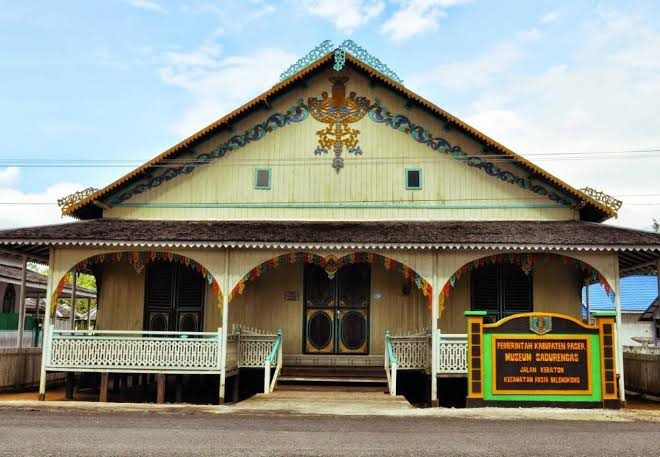
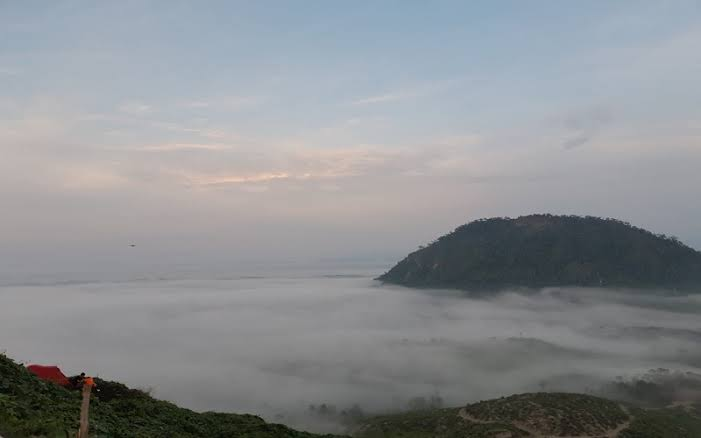
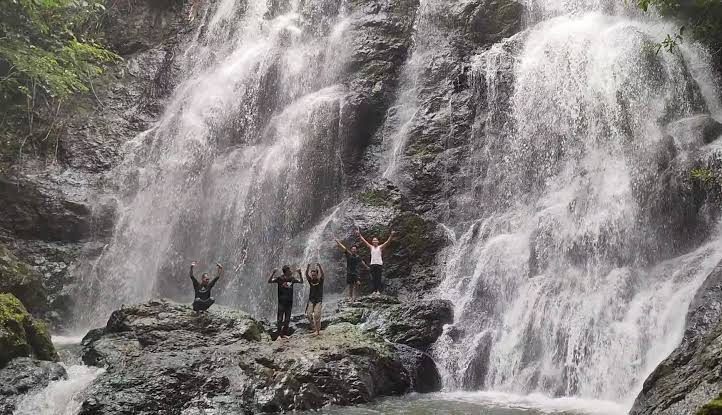
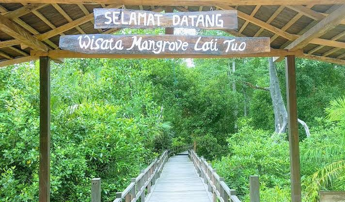
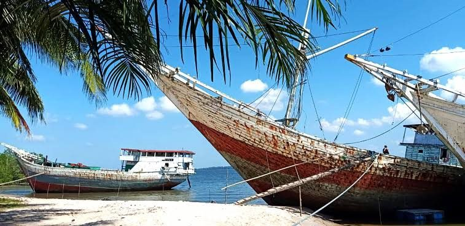

Tourist
Places
Museum Sadurengas

Sadurengas Museum is a historical and cultural tourism site. Located on Jalan Keraton Pasir Belengkong, it houses a collection of various ancient artifacts as evidence of the heritage of the Paser Sultanate.
Gunung Embun

Enjoying the natural beauty from the peak of Mount Boga at an altitude of 263 meters above sea level. With clean air and a cool atmosphere, the long journey will be completely rewarding.
Air Terjun Doyam Seriam

It is located in Modang Village, Kuaro District, Paser Regency. Known for its pristine, lush natural beauty despite the road access still being quite difficult.
Hutan Mangrove Lati Tuo

A well-preserved forest atmosphere. The charm of beautiful, cool, and lush green nature. Equipped with various gazebos and photo spots for visitors. The road leading there is already smooth and paved. It is only 45 minutes from downtown Tanah Grogot.
Pantai Pasir Putih Paser

A beautiful beach with soft white sand. It is located in Pasir Mayang Village, Kuaro District, Paser Regency. Situated at the tip of Adang Bay, it is part of the deepest or longest bay in East Kalimantan.